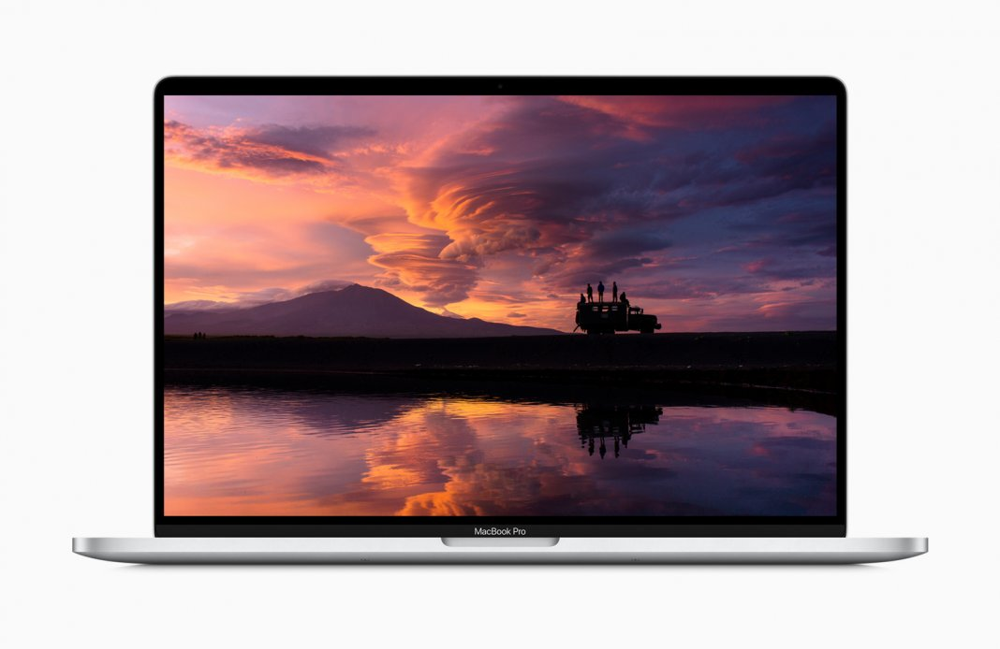
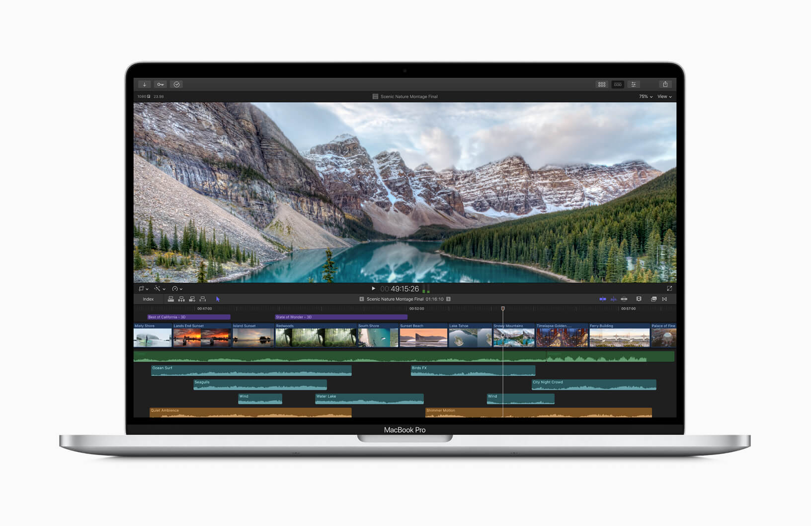

มาแล้ว Macbook Pro รุ่น 16นิ้ว เพิ่มแรมได้มากที่สุด 64gb และมาพร้อมกับปุ่ม Escape
มาแบบไม่ได้ตั้งตัวจริง ๆ Apple ประกาศเปิดตัว MacBook Pro รุ่นใหม่ ชูโรงด้วย MacBook Pro 16 ขนาดจอใหม่ (แทนที่ 15 นิ้ว) สเปกแรงและคุ้มกว่าเดิม อัพเกรดใหม่เพียบ และปุ่ม Escape แบบกดกลับมาแล้ว
จุดที่น่าสนใจของการเปิดตัว MacBook Pro รุ่นใหม่นี้คือ Apple ได้นำเหล่า Creator ชื่อดัง มาช่วยกันโปรโมท MacBook Pro 16 ชูให้เห็นเลยว่า นี้คืออุปกรณ์สำหรับมือโปรโดยเฉพาะ
สำหรับตัว MacBook Pro 16 ก็มาพร้อมหน้าจอ Retina ขนาด 16 นิ้วตามชื่อ ความละเอียด 3072 x 1920 (226 ppi)
กับมีความคมชัดสูงถึง 6 ล้านพิกเซล
แป้นพิมพ์หรือ Magic Keyboard ก็มีการอัพเกรดใหม่ โดยมีการขยับขึ้นลงของปุ่มที่ระยะ 1 มม.
ช่วยให้สัมผัสการพิมพ์ได้เงียบขึ้น
และดียิ่งขึ้น ที่สำคัญคือปุ่ม Escape แบบกดกลับมาแล้ว พร้อมยังมี Touch
Bar เช่นเคย

ระบบระบายความร้อนก็มีการออกแบบใหม่หมด โดยได้เพิ่มขนาด Heat sink ให้ใหญ่กว่าเดิมถึง 35%
ส่วนพัดลมก็ใหญ้ขึ้นเช่นกัน
ซึ่งช่วยให้มีการไหลเวียนของอากาศมากกว่าเดิม 28% ด้วย
ด้านสเปก ตัวเครื่องจะมาพร้อมซีพียู Intel Core i7 และ Core i9 แบบ Gen 9th อัด Turbo Boost ได้สูงสุด สูงสุด 5.0GHz แรมแบบ DDR4 คความเร็ว 2666MHz ทั้งหมด เริ่มที่ 16GB ไปจนถึง 64GB กันเลย ส่วน SSD ก็เริ่มที่ 512GB และใส่เพิ่มได้สูงสุด 8TB
ตัวการ์ดจอใช้ AMD Radeon Pro 5300M หรือ AMD Radeon Pro 5500M พร้อมแรม 4GB GDDR6 ซึ่งจะสลับใช้ระหว่าง Intel UHD Graphics 630 ส่วนแบตฯ ก็ใช้ได้นานสูงสุด 11 ชั่วโมง

สุดท้ายนี้ราคาของ MacBook Pro 16 ก็เริ่มต้นที่ 75,900 บาท สำหรับรุ่น Core i7 กับ 89,900 บาท สำหรับรุ่น Core i9 มี 2 สีให้เลือกระหว่างสีเงิน (Silver) กับสีเทาสเปซเกรย์ (Space Grey) สามารถดูรายละเอียดสเปกเพิ่มเติมได้ที่เว็บ Apple